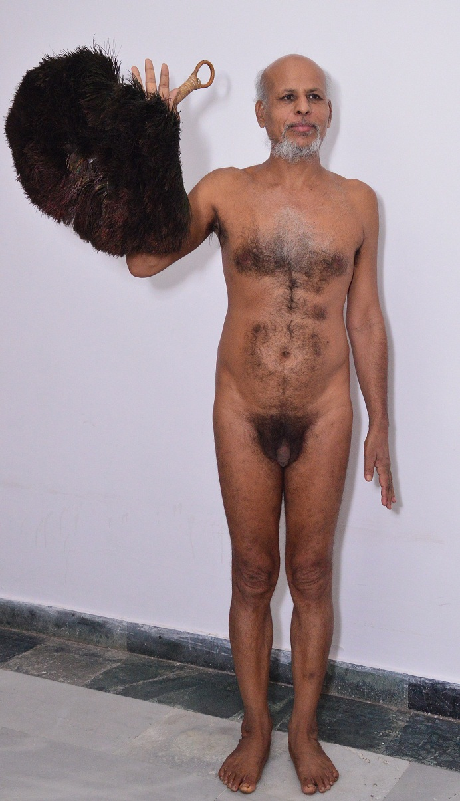

आचार्य श्री 108 विशद सागर जी महाराज
जीवनी
संघ
ग्रंथ
विधान
वीडिओ
(current)
गैलरी
हमसे संपर्क करे
णमो अरिहंताणं णमो सिद्धाणं णमो आयरियाणं णमो उवज्झायाणं णमो लोए सव्व साहूणं
णमो अरिहंताणं णमो सिद्धाणं णमो आयरियाणं णमो उवज्झायाणं णमो लोए सव्व साहूणं
वीडिओ
Follow us on youtube channel :
vishad deshna (vishaddeshnaa)
आचार्य श्री 108 विशद सागर जी चालीसा
आचार्य १०८ श्री विशदसागर जी महाराज
नारनौल पंचकल्याणक| 8 April Part-1| झंडारोहण| गर्भ पूर्व रूप| आ. विशद सागरजी
नारनौल पंचकल्याणक| 8 April Part-2| झंडारोहण| गर्भ पूर्व रूप| आ. विशद सागरजी
नारनौल पंचकल्याणक| 8 April Part-3| झंडारोहण| गर्भ पूर्व रूप| आ. विशद सागरजी
नारनौल पंचकल्याणक| 13 April| मोक्ष कल्याणक
हस्तिनापुर पंचकल्याणक 27 April| त्यागी व्रती आश्रम| गर्भ कल्याणक
हस्तिनापुर पंचकल्याणक 28 April Part-1| जन्म कल्याणक
हस्तिनापुर पंचकल्याणक 28 April Part-2| जन्म कल्याणक
हस्तिनापुर पंचकल्याणक 29 April Part-1| तप कल्याणक
हस्तिनापुर पंचकल्याणक 29 April Part-2| तप कल्याणक
हस्तिनापुर पंचकल्याणक 30 April | ज्ञान कल्याणक
हस्तिनापुर पंचकल्याणक 01 May | मोक्ष कल्याणक
गुरु भक्ति आचार्य विशदसागर जी महाराज मथुरा चौरासी 23.2.18
आचार्य विशदसागर जी महाराज की पीयूष देशना 19.2.18 मथुरा
आचार्य विशदसागर जी महाराज की पीयूष देशना 19.2.18 मथुरा
गुरुशिष्य मिलन तिजारा | 22 january 2018
आचार्य विशदसागर जी महाराज द्वारा गुरू भक्ति मथुरा चौरासी 21.2.28
गुरु भक्ति आचार्य विशदसागर जी महाराज मथुरा चौरासी 23.2.18
गुरु भक्ति आचार्य विशदसागर जी महाराज मथुरा चौरासी 25-2-18
सुप्रभात स्त्रोत
गुरु वंदना - परम पूज्य आचार्य श्री 108 विशद सागर जी महाराज (Guru Vandana) Part - 1
मुनि दीक्षा व् आचार्य पदारोहण 10 Feb Part-1| आ.श्री विशद सागरजी| जैन मंदिर रेवाड़ी/a>
मुनि दीक्षा व् आचार्य पदारोहण 10 Feb Part-2| आ.श्री विशद सागरजी| जैन मंदिर रेवाड़ी
आहारचर्या आचार्य श्री विशद सागरजी ससंघ| 10 Feb| जैन मंदिर रेवाड़ी हरियाणा
सामूहिक पारणा 30 Sep| आ. श्री विशद सागर जी उस्मानपुर दिल्ली Part -1
चमत्कारी विधान में झूम उठे भक्त # श्री मुनिसुव्रतनाथ विधान
अभिषेक
अभिषेक व् पूजन| 10 Feb| जैन मंदिर रेवाड़ी
4081 ||श्री विशद ग्रंथ || सेक्टर -50 ,नोएडा ,(उत्तर प्रदेश )
हस्तिनापुर पंचकल्याणक 30 April | ज्ञान कल्याणक
सामूहिक पारणा 30 Sep| आ. श्री विशद सागर जी उस्मानपुर दिल्ली Part -1|
मंगल प्रवचन - आचार्य विशद सागर जी महराज
मंगल प्रवचन - आचार्य विशद सागर जी महराज
मंगल प्रवचन - आचार्य विशद सागर जी महाराज
सुख दुःख ! | आचार्य विशद सागर मंगल प्रवचन
कर्म की मार ! आचार्य विशद सागर मंगल प्रवचन |
परम पूज्य क्षमामूर्ति आचार्य विशद सागर महाराज मंगल वाणी | "
परम पूज्य क्षमामूर्ति आचार्य विशद सागर महाराज मंगल वाणी |
परम पूज्य क्षमामूर्ति आचार्य विशद सागर महाराज मंगल वाणी |
आचार्य विशद सागर मंगल प्रवचन vol - 4
आचार्य विशद सागर मंगल प्रवचन Vol - 5|
आचार्य विशद सागर मंगल प्रवचन Vol - 6
आचार्य विशद सागर मंगल प्रवचन Vol - 10
ज्ञानाराधना का महाकुम्भ भाग -1| आचार्य श्री विशदसागरजी | 5 जनवरी 2019 | लाल मन्दिर चाँदनी चौक दिल्ली
ज्ञानाराधना का महाकुम्भ भाग -2| आचार्य श्री विशदसागरजी | 5 जनवरी 2019 | लाल मन्दिर चाँदनी चौक दिल्ली
जब अकबर ने बीरबल से कहा आत्मा कैसी और कहाँ होती है सिद्ध करो ? || Acharya VishadSagar Maharaj ||
नारनौल पंचकल्याणक| 8 April| झंडारोहण| गर्भ पूर्व रूप| आ. विशद सागरजी|
नारनौल पंचकल्याणक| 9 April Part-1 | 16 स्वपन| गर्भ उत्तर रूप| आ. विशद सागरजी
नारनौल पंचकल्याणक| 9 April Part-2 | 16 स्वपन| गर्भ उत्तर रूप| आ. विशद सागरजी|
नारनौल पंचकल्याणक| 9 April Part-3 | 16 स्वपन| गर्भ उत्तर रूप| आ. विशद सागरजी
नारनौल पंचकल्याणक| 10 April Part-1| जन्म| आ. विशद सागरजी
नारनौल पंचकल्याणक| 10 April Part-2| जन्म| आ. विशद सागरजी|
नारनौल पंचकल्याणक| 10 April Part-3| जन्म| आ. विशद सागरजी|
नारनौल पंचकल्याणक| 11 April Part-1| दीक्षा तप | आ. विशद सागरजी
नारनौल पंचकल्याणक| 11 April Part-2| दीक्षा तप | आ. विशद सागरजी|
नारनौल पंचकल्याणक| 12 April Part-1| ज्ञान | आ. विशद सागरजी|
नारनौल पंचकल्याणक| 12 April Part-2| ज्ञान | आ. विशद सागरजी|
नारनौल पंचकल्याणक| 12 April Part-3| ज्ञान | आ. विशद सागरजी|
नारनौल पंचकल्याणक| 13 April| मोक्ष कल्याणक | आ. विशद सागरजी|
